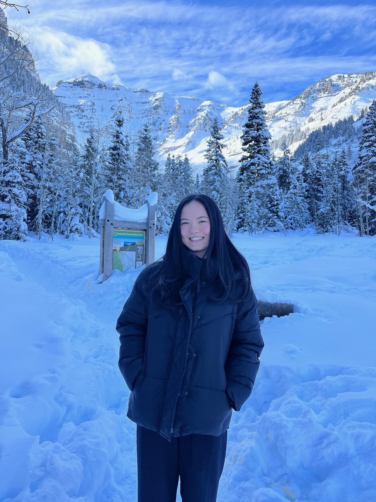
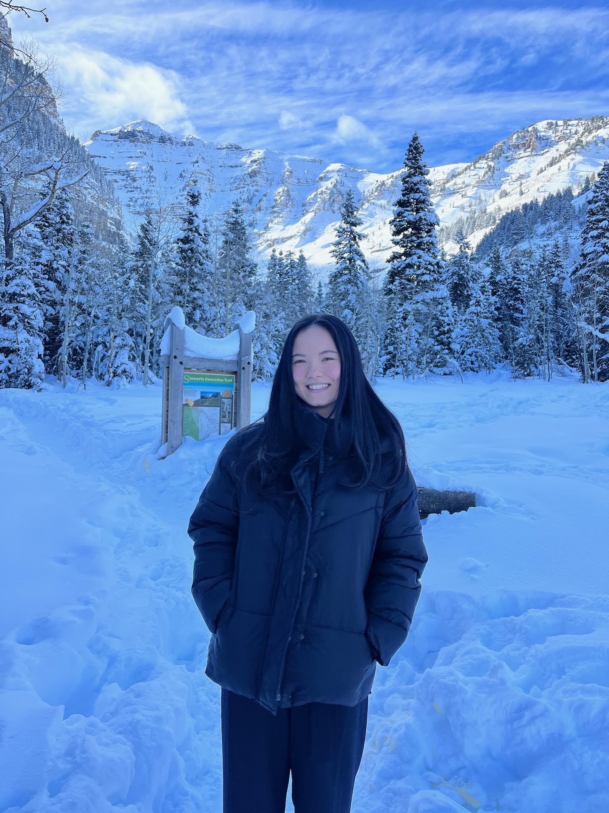
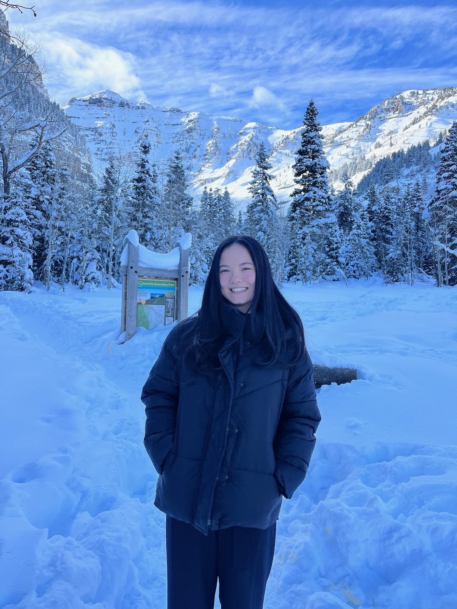

Geospatial Scientist | Data Enthusiast | Proactive Thinker
Hello! My name is Narissa Broderick, and I am a dedicated professional with a background in geography, geospatial science, and information systems. I enjoy creating data-driven solutions, learning new technologies, and contributing to meaningful projects. In my free time, I love reading, playing volleyball, and exploring new places.
